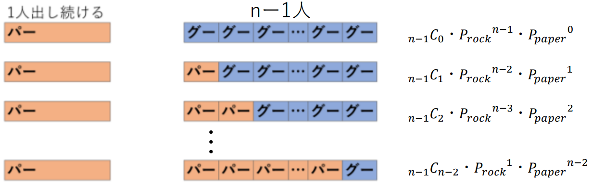

・$n$人でじゃんけんをする
・$A$はパーを出し続ける
・$A$以外の人はグーを$P_{rock}$、チョキを$P_{scissors}$、パーを$P_{paper}$の確率で出す
・勝った人同士で再度じゃんけんを行い、1人になるまで繰り返す
求める確率は上記の条件下で最後まで残った1人が$A$である確率です。
これを$P(A wins|n)$とします。
$P(Awins|n)$を求めるにはあいこになる確率を求める必要があります。
あいこになる確率は、あいこになる余事象、すなわちあいこにならない確率から求めます。
あいこにならないのは、$A$以外の人が①「グーやパーを出すパターン(全員パーは含まない)」、②「チョキやパーを出すパターン(全員パーは含まない)」があります。
①は図より$(P_{rock}+P_{paper})^{n-1}-P_{paper}^{n-1}$
②は①と同様に$(P_{scissors}+P_{paper})^{n-1}-P_{paper}^{n-1}$
よって、あいこにならない確率は
①+②=$(P_{rock}+P_{paper})^{n-1}+(P_{scissors}+P_{paper})^{n-1}-2P_{paper}^{n-1}$
あいこになる確率は
1-(①+②)=$1-\{(P_{rock}+P_{paper})^{n-1}+(P_{scissors}+P_{paper})^{n-1}-2P_{paper}^{n-1})\}$
これを$P(draw|n)$とします。
すなわち、
$P(Awins|n)$を求めるにはこの確率も求める必要があります。
この確率は図より
$_{n-1}C_{m-1}P_{rock}^{n-m}P_{paper}^{m-1}$
これを$P(win|n,m)$とします。
すなわち、
$P(Awins|n)$を求めるために$P(Awins|2)$を求めます。
$P(Awins|2)$は
(1回目に$A$が勝つ)または(2回目に$A$が勝つ)または(3回目に$A$が勝つ)または$\dots$
すなわち、
(あいこにならずに$A$が勝つ)または(1回あいこになり、$A$が勝つ)または(2回あいこになり、$A$が勝つ)または$\dots$
と考えることができるので、式にすると
$P(Awins|2)=P(win|2,1)\{P(draw|2)\}^0+P(win|2,1)\{P(draw|2)\}^1+P(win|2,1)\{P(draw|2)\}^2+\dots$
これは初項$P(win|2,1)$、公比$P(draw|2)$の無限等比級数の和と考えることができるので、公比$P(draw|2)$が$P_{paper}\neq1$のとき、$0\leqq{P(draw|2)}<1$で、無限等比級数の和の公式から
$P(Awins|2)=\frac{P(win|2,1)}{1-P(draw|2)}$
$P(Awins|3)$も求めます。
$P(Awins|3)$は
($A$が一人勝ちする)または($A$が二人で勝ち、その後に$A$が勝つ)
と考えることができるので、$P(Awins|2)$を求めたときの考え方を使って、式にすると
$P(Awins|3)=\frac{P(win|3,1)}{1-P(draw|3)}+\frac{P(win|3,2)}{1-P(draw|3)}\cdot{\frac{P(win|2,1)}{1-P(draw|2)}}$
式をよく見ると、$P(Awins|2)$を求めたときの形があり、
$\frac{P(win|2,1)}{1-P(draw|2)}=P(Awins|2)$と書き換えられるので、
$P(Awins|3)=\frac{P(win|3,1)}{1-P(draw|3)}+\frac{P(win|3,2)}{1-P(draw|3)}P(Awins|2)$
$P(Awins|n)$を求めます。
$P(Awins|3)$を求めたときと同様に考えて、$P(Awins|n)$は
($A$が一人勝ちする)または($A$が二人で勝ち、その後に$A$が勝つ)または$\dots$または($A$が$n-1$人で勝ち、その後に$A$が勝つ)
と考えることができ、式にすると
$P(Awins|n)=\frac{P(win|n,1)}{1-P(draw|n)}+\frac{P(win|n,2)}{1-P(draw|n)}P(Awins|2)+\frac{P(win|n,3)}{1-P(draw|n)}P(Awins|3)+\dots+\frac{P(win|n,n-1)}{1-P(draw|n)}P(Awins|n-1)$
となり、$P(Awins|1)=1$とすると$\sum$を使ってまとめることができ、
$P(Awins|n)=\frac{1}{1-P(draw|n)}\sum_{m=1}^{n-1}{P(win|n,m)P(Awins|m)}$
$=\frac{1}{(P_{rock}+P_{paper})^{n-1}+(P_{scissors}+P_{paper})^{n-1}-2P_{paper}^{n-1}}\sum_{m=1}^{n-1}{_{n-1}C_{m-1}P_{rock}^{n-m}P_{paper}^{m-1}P(Awins|m)}$
求めたい確率の計算式を得ることができました。
青のグラフは$A$以外の人が出す手(グー、チョキ、パー)の確率をそれぞれ$\frac{1}{3}$としたときのグラフです。赤のグラフはA以外の人が決められた確率(↓の確率)で手を出したときのグラフです。(確率を入力して、下のボタンを押すと確率が自動で計算されてグラフが描画されます)
桜美林大学の芳沢光雄教授によると、統計的に人間が出す手の確率を調べた結果、グーは35.0%、 チョキは31.7%、 パーは33.3%でした。
$A$以外がその確率に従うとき、横軸を人数、縦軸を$P(Awins|n)$とすると、グラフは以下のようになります。
グーの確率:$P_{rock}=$
チョキの確率:$P_{scissors}=$
パーの確率:$P_{paper}=$
計算するじゃんけんの人数:$n=$人まで
出す手の確率の引用:日本じゃんけん協会
https://japan-rps.jimdofree.com
Contact:youheguchi918@gmail.com